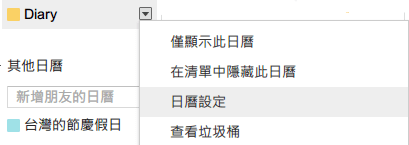

Google 日曆 ics 轉 Excel/CSV，日記版
1. 使用方式
請使用最新版
Google Chrome
或
Firefox
瀏覽器。
如右圖，到
Google 日曆
，點選左下方「妳的打卡日記」的倒三角形→日曆設定→匯出日曆 zip 檔。

使用解壓縮工具(e.g.
7-zip
) 將 zip 檔解壓縮得到 ics 檔。
在右方「選擇日記 ics 檔案」 按鈕選擇 ics 檔。
2. 選擇日記 ics 檔案
(若已選擇檔案，下次選擇檔案前請先重新整理此頁面。)
4. 可下載成 Excel 檔
3. 點選下方圖表總覽 / 詳細紀錄
圖表總覽
詳細紀錄
用右方「顯示欄位」來清除或選擇條件，例如先按下全部取消後再選擇依照
@人物
或
#標籤
顯示事件。
4. 顯示欄位
全部勾選
全部取消
依照 [分數]
依照 @人物
依照 #標籤
Source code on
Github
. 有疑問或需求請自行修改或至 Github 回報。